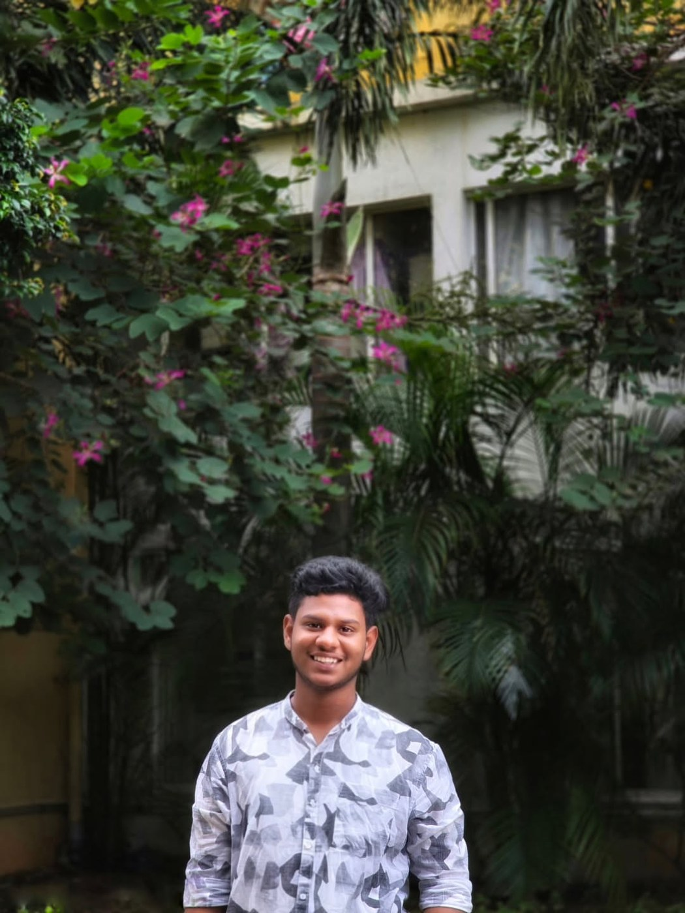

01 · E-Commerce Recommendation System
Explores a reinforcement-learning approach to product recommendations using user interaction events. A Q-Learning prototype is used to learn preferences through reward signals.
A third-year B.Tech student at The Apollo University, interested in Artificial Intelligence, Data Science and Data Analytics. I enjoy learning through practical projects and turning data into useful insights.

I am pursuing a B.Tech in Computer Science and Engineering – Artificial Intelligence and Data Science at The Apollo University. I am comfortable working with Python, SQL, HTML and CSS, and have basic knowledge of Java, Machine Learning and Flask.
Through academic projects and my Data Analytics internship at Alfido Tech, I have gained practical exposure to Python, data cleaning and data visualization. I am eager to strengthen my skills, learn from industry professionals and explore opportunities in AI, Data Science and related technology fields.
Grouped by my current level of familiarity.
Academic and case-study projects exploring machine learning and data analysis.
Explores a reinforcement-learning approach to product recommendations using user interaction events. A Q-Learning prototype is used to learn preferences through reward signals.
Uses text feature representation and K-Means clustering to group text records by similarity, then compares the clusters with available sentiment labels.
Compares classification algorithms on a symptom-based dataset to study disease-category prediction. This is an educational machine-learning project, not a medical diagnostic tool.
Applies RFM (Recency, Frequency and Monetary) analysis and K-Means clustering to segment customers based on purchasing behaviour and visualize the resulting groups.
Completed a 45-day internship in Data Analytics, gaining practical exposure to Python, data cleaning and data visualization.
Participated in a one-day vibe-coding hackathon and deployed a working AI prototype using Google Antigravity.
I'm open to learning opportunities, internships and conversations around AI, Data Science and technology.